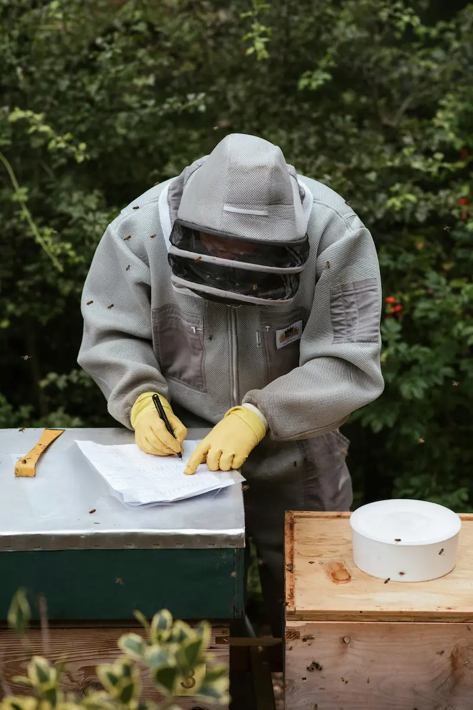
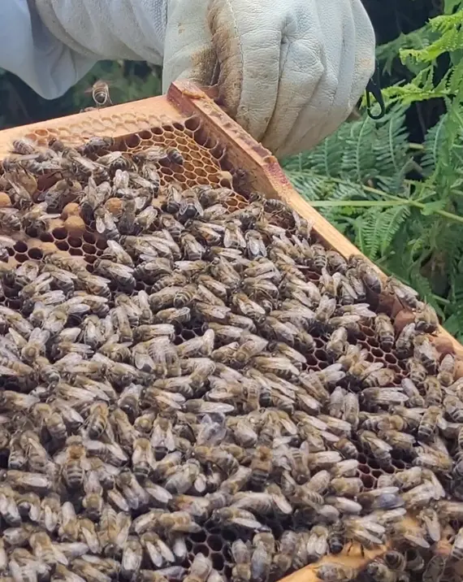

Hive Hygiene – Keeping Your Beehive Clean and Healthy

Hive hygiene is one of the simplest but most powerful tools a beekeeper has. Clean equipment, thoughtful comb rotation and careful handling of frames all help reduce the risk of disease, discourage pests and keep colonies strong. This guide focuses on practical, UK-style beekeeping where weather, forage and regulations shape how we look after bees. For the wider health context, use it alongside the bee diseases and pests overview, bacterial diseases and bee pests pages.
Bees are naturally good housekeepers, but they can only work with the hive you give them. Old comb, contaminated equipment and poor apiary habits make life harder for colonies and easier for pests and pathogens. The aim of this page is to give you a clear set of routines you can build into your day-to-day hive management from your very first season, improving both disease prevention and general colony health over time.
Why Hive Hygiene Matters
Many common honey bee problems have a hygiene element – either in how they spread or how easily they take hold. Good hygiene sits right underneath bacterial disease prevention, pest control and general colony health. That includes:
- Bacterial diseases such as American foulbrood (AFB) and European foulbrood (EFB)
- Fungal and gut problems such as chalkbrood or Nosema
- Varroa-linked viral issues that damage both brood and adult bees
- Pests and predators like wax moth or small hive beetle, which thrive on neglected comb and debris
Good hygiene will not magically prevent every disease, but it reduces the background level of contamination and makes early signs easier to spot. It also supports the diseases and pests overview and helps link together bacterial disease prevention, pest control and wider colony-health management.
Everyday Hive Housekeeping
Think of hive hygiene as a set of routines built into every inspection rather than a separate job. A few minutes spent tidying each visit adds up over the season and supports both disease prevention and general colony health.
- Scrape and tidy surfaces: Remove loose burr comb, brace comb and lumps of propolis that make inspections messy. Keep the top bars and frame lugs clear so frames can be moved without crushing bees.
- Clean your hive tool between hives: A quick scrape followed by flame-cleaning with a blowtorch (where safe) helps prevent spreading pathogens around the apiary.
- Manage the floor: Clear dead bees and cappings from solid floors. If you use open mesh floors, inspect the insert boards for debris patterns, varroa drop and signs of pest activity.
- Look after gloves and suits: Wash your bee suit regularly and clean or change gloves, especially after working any colony you are concerned about.
These small actions make inspections smoother and support the more structured hygiene work explained below.
Comb Rotation and Box Changes
Brood comb acts like a long-term diary of everything your bees encounter: pollen, pesticides, spores and general debris all build up over time. Old comb can harbour disease and may become harder for queens to lay in.
| Comb condition | Typical age | What to consider |
|---|---|---|
| Light to mid-brown, open cell pattern | 1–2 seasons | Usually fine to keep in the brood nest if healthy. |
| Dark brown, heavy cocoon build-up | 3–5 seasons | Plan to cycle these frames out using shook swarm, Bailey change or gradual replacement. |
| Very black, patched or damaged comb | Often unknown / very old | Prioritise removal and destruction or safe processing. Do not move into other colonies. |
Many UK beekeepers aim to replace a proportion of brood comb each season so that no frame stays in the hive for more than three to five years. You can link comb changes to swarm control or queen replacement so that hygiene work fits naturally into your year-in-the-apiary plan. This is especially relevant where you are trying to lower the risk of bacterial disease, reduce pest problems and improve brood quality.
Avoiding Cross-Contamination Between Colonies
Many problems spread because equipment is moved too casually between hives. This is especially important for foulbrood risk, pest transfer and wider colony-health issues. A few simple boundaries make a big difference:
- Keep suspect colonies separate: If you are worried about disease in one hive, finish the rest of your inspections first and handle that colony last with dedicated gloves and a freshly cleaned hive tool.
- Be cautious with second-hand kit: Only buy frames, brood boxes or supers from trusted sources, and disinfect them before use. Unknown comb can import someone else’s problem into your apiary.
- Label boxes and frames: Simple markings help you keep track of which equipment has been used where and when it was last changed.
- Control robbing: Reduce entrances on weak colonies and avoid leaving exposed honey or comb near hives, especially during dearths or in late summer.
Cleaning After Disease
Where disease control involves authorised veterinary medicines, ensure treatments are recorded appropriately alongside your hygiene and inspection notes. Further guidance is available on the veterinary medicine records page.
When you have had a confirmed disease, or you are cleaning up after a serious suspicion, hive hygiene steps become more specific:
- American or European foulbrood: Follow the inspector’s directions exactly. Some equipment may need to be destroyed; other parts may be sterilised by scorching or approved disinfection methods.
- Chalkbrood, Nosema or general brood issues: Improve ventilation, change old comb and clean floors. Re-queening with more hygienic stock can help in chronic cases.
- Varroa-related problems: Combine effective varroa treatments with better monitoring, comb changes and improved nutrition to give colonies a chance to recover.
Our varroa management guide, bee diseases overview, bacterial diseases page and bee pests guide go into more detail on specific conditions.
Hygienic Behaviour and Bee Genetics

Not all colonies are equally tidy. Some lines of bees show strong hygienic behaviour – they detect and remove diseased or dead brood quickly, breaking the cycle of infection. Others are slower or less thorough, which can allow diseases to spread and weaken general colony health over time.
When you are choosing queens or buying nucs, it is worth asking how the breeder selects for hygiene. Combined with good management, more hygienic stock can:
- Reduce chalkbrood and brood-pattern problems
- Help control varroa-related viruses
- Support recovery after disease treatment
Hygienic traits are only one part of the picture – you still need practical routines – but they can tilt the odds in your favour over the long term.
Linking Hygiene with Records and Planning
It is difficult to improve what you do not track. Simple notes can turn hive hygiene from a vague good intention into a clear plan, especially when you are trying to reduce recurring disease or pest problems:
- Mark frames or boxes with the year they were introduced.
- Record any suspected or confirmed disease and how equipment was treated.
- Note how often you clean floors and change comb.
- Link hygiene notes to your seasonal calendar so tasks are spread across the year.
Some beekeepers are perfectly happy using a notebook in the bee shed. Others like more structure. Digital tools such as the HiveTag web app make it easy to log inspections, varroa counts, comb changes and disease treatments so that patterns become obvious over time.
Hive Hygiene – Frequently Asked Questions
These quick questions summarise some of the points above and are also marked up as FAQ schema to help search engines understand the page:
- How clean does a hive really need to be? – It does not need to look new, but comb should be serviceable, floors clear and equipment free from obvious contamination.
- Is bleach safe on bee equipment? – Some items can be cleaned with suitable disinfectants, but always follow product guidance and rinse thoroughly. Wooden brood boxes are more often scorched than bleached.
- Can I re-use frames from a dead colony? – Only if you are confident there was no serious disease. When in doubt, seek advice from a mentor or inspector; sometimes destruction is the safest option.
- How often should I deep-clean the apiary? – A good tidy-up at the start and end of the active season, plus light housekeeping on each visit, keeps things under control.
Summary – Clean Hives, Healthier Bees
Hive hygiene is not about perfection; it is about consistent, practical habits. By keeping floors tidy, rotating old comb, avoiding cross-contamination and following official guidance after disease, you give your colonies the best chance to stay healthy and productive. It is one of the key foundations of bacterial disease prevention, pest control and general colony health.
Use this page alongside the guides on diseases and pests, bacterial diseases, bee pests, other conditions, varroa management and the year in the apiary to build a joined-up approach to bee health in your own apiary.